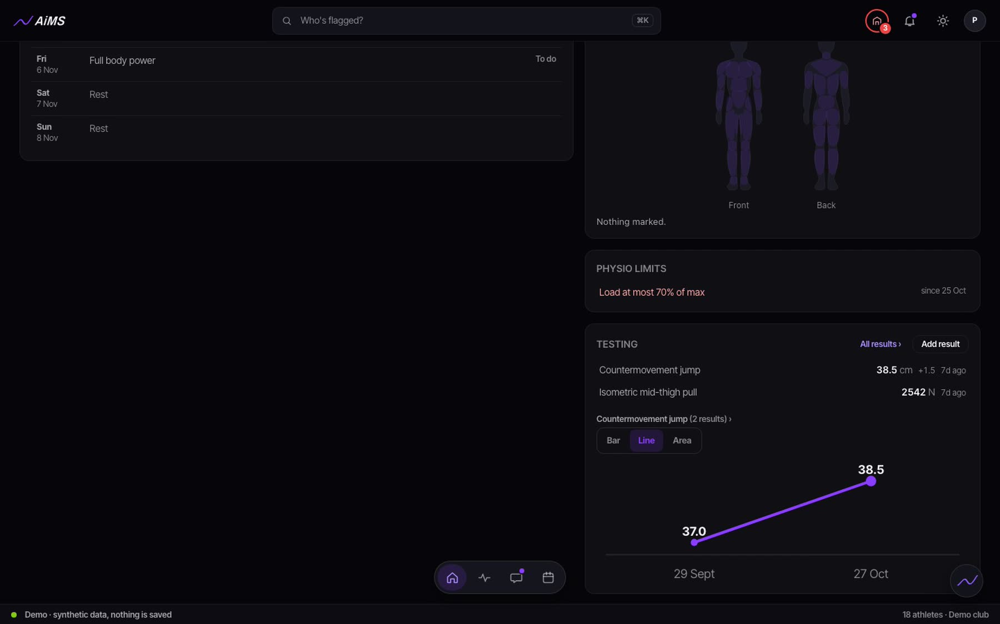
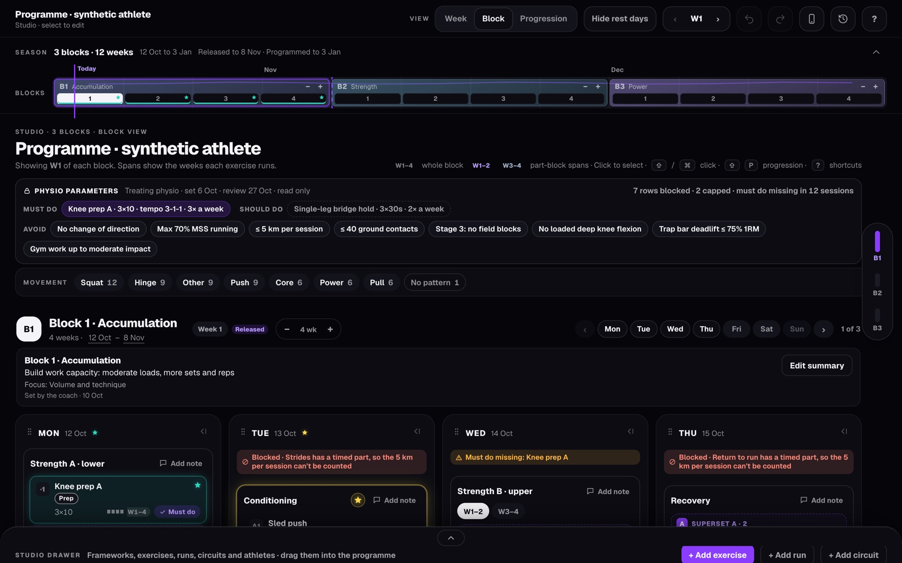
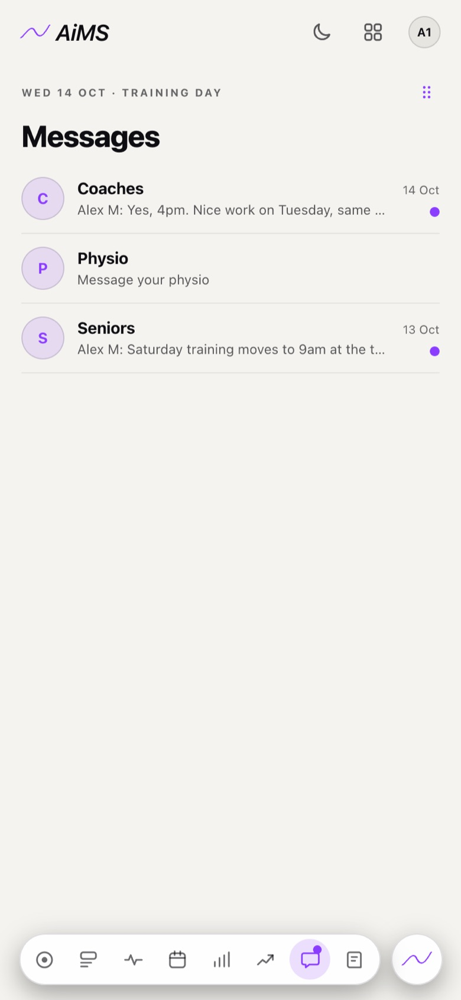
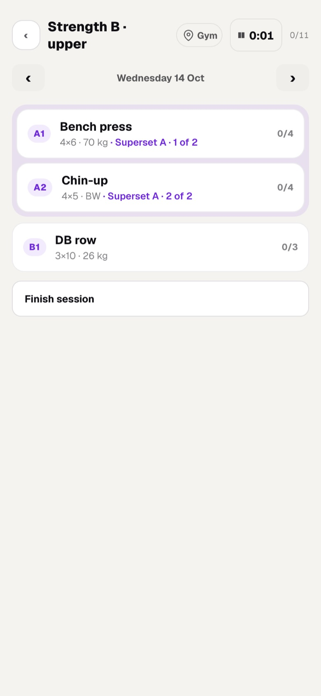
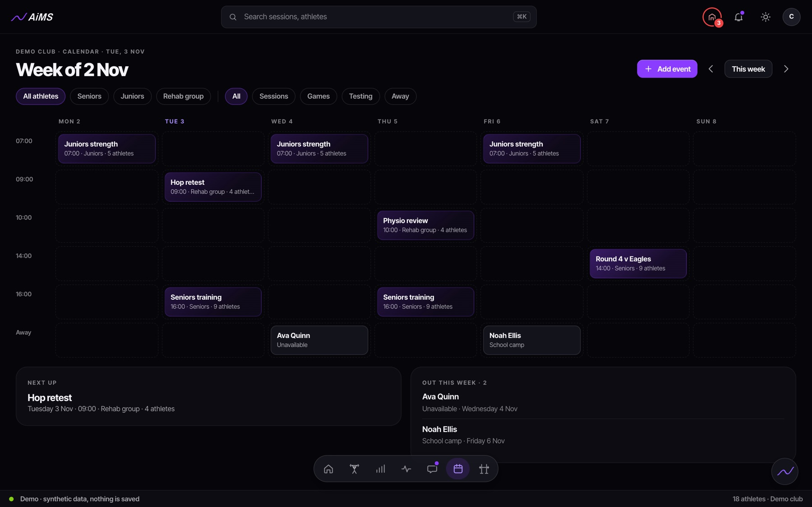
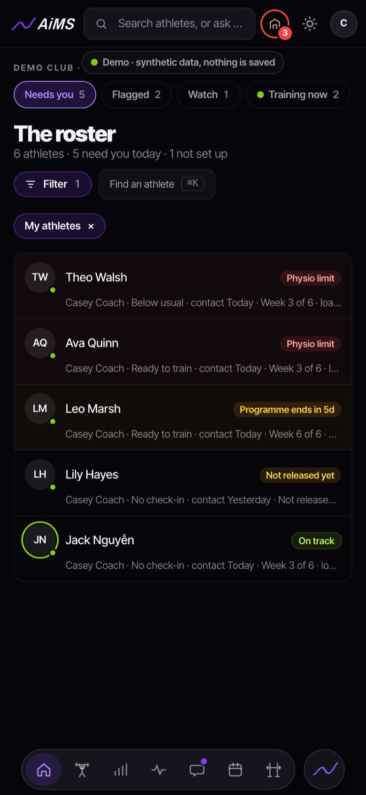

For physios who share athletes with coaches.
Your job in AiMS: set the limits, steer the return to play, and keep in touch with the athlete. The coach plans within your limits.

Set the limits once.
Avoid a movement like change of direction or jump landings, cap RPE, load or volume, or rule out one exercise, with a start and end date. The limits sit on the athlete’s overview, where the coach plans.
The programme respects them.
Studio won’t save a session that breaks a limit, and every limit carries the physio’s name.

The athlete knows what they can do now.
Their return-to-training page shows their stage, their limits and what each one means. They see the limits on Today too.
How they are, every morning.
Six scores before training, and a private thread with the athlete that coaches can’t read.

What’s live for physios, and what’s next.
AiMS carries the limits and the plan today. Clinical notes are next.
Limits and return to play
- Avoid a movement: change of direction, deceleration, max speed, jump landings, contact, overhead or deep knee flexion
- No impact work, or cap impact at low or moderate
- Cap RPE, load (as a % of max) or volume (as a % of planned)
- Rule out one exercise
- Start and end dates, and every limit carries your name
- The athlete sees their stage and limits on their return-to-training page
Clinical notes
Notes and assessments next to the athlete’s plan. Until then, your notes stay in your clinic’s own system. The coach sees the limit, not the note.
A physio opens an athlete’s overview: their week, readiness, check-ins, limits and testing. Demo data.
Ava’s way back, beat by beat.
The physio makes the clinical calls. AiMS carries the plan, the sessions, the check-ins, the tests and the messages, for everyone around Ava.
Fictional athlete. Illustrative, not clinical advice. Criteria are set by the treating physio. Screens: AiMS demo data.
- P
Seen by the physio
After surgery, Ava Quinn’s physio and S&C coach agree her rehab plan.
- SC
Programme built
The coach builds Ava’s programme in Studio, with a demo video for every exercise.
- A
Every session logged
Ava logs each set on her phone at home and in the gym, even with no signal.

- A
Soreness up
Ava’s morning check-in shows soreness at 7 out of 10. Her coach and physio both see it.

- P
Checks in
Her physio messages her in their private thread, and the coach eases that day’s session.
- SC
Strength testing
Hop symmetry and isometric strength are tested and recorded. Both trend up across the block.

- P
Criteria met to run
Her physio confirms she meets the criteria to start running, and the coach adds it to her programme.
- CC
Back with the squad
Once her physio clears her, Ava moves onto the squad programme. Her club coach, set up as a coach in AiMS, sees her readiness each morning.

Finn’s return to sprinting.
When his load climbs too fast, the line turns amber until the plan is adjusted.
Fictional athlete. Illustrative, not clinical advice. Criteria are set by the treating physio. Screens: AiMS demo data.
- P
Hamstring strain
Finn Reyes strains a hamstring. His physio assesses him and messages him his first steps.
- SC
Return-to-run plan
The coach builds a staged running plan, and moves him on only when his physio says he’s met the criteria.

- A
Runs logged
Finn logs every run and rates how hard each session felt.
- SC
Load flag
His 7-day load climbs past 1.3 times his 28-day average, and he’s flagged on the coach’s list.

- SC
Plan adjusted
The coach trims his next sprint session and messages him why.
- P
Full sprinting
His physio confirms he meets the criteria for full sprinting.
- CC
Match ready
Finn is back in full training, and his club coach sees his readiness through match week.
Physios join your plan as staff.
Clinics, gyms and clubs share one plan. Physios sign in with the physio role.
See AiMS with your own athletes.
Book a 30-minute video call with Tim. He shows you AiMS using your programmes and your clinic’s way of working.
The founding cohort is a small group of clinics, gyms and clubs that start first, set up by Tim.